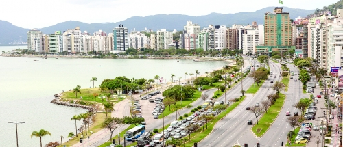
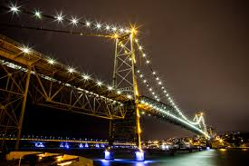
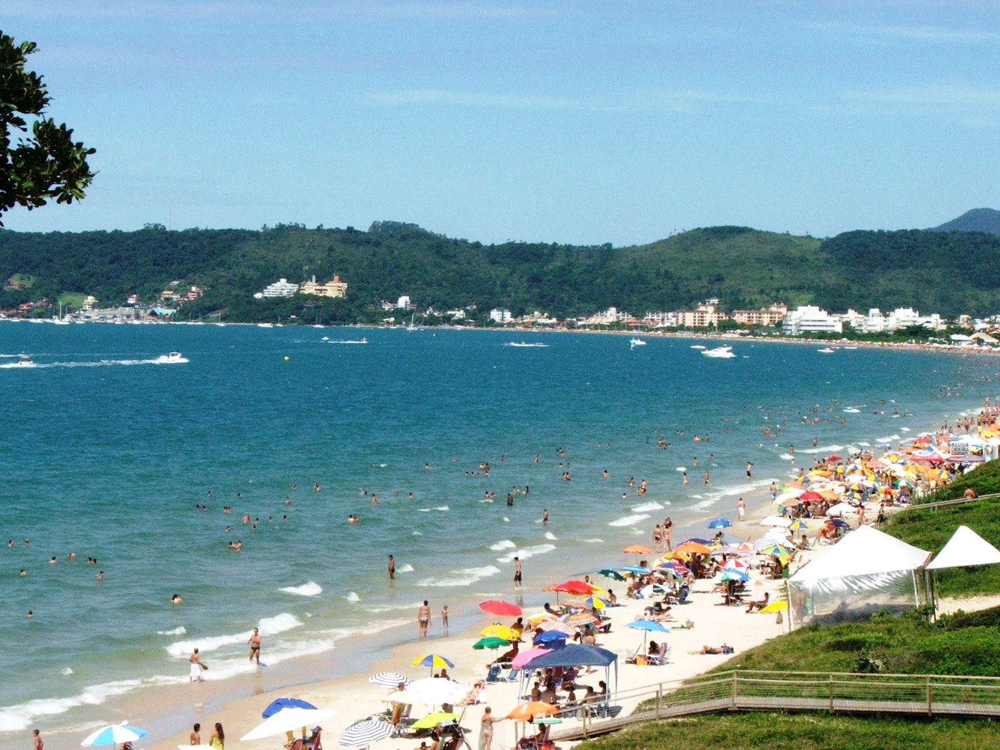
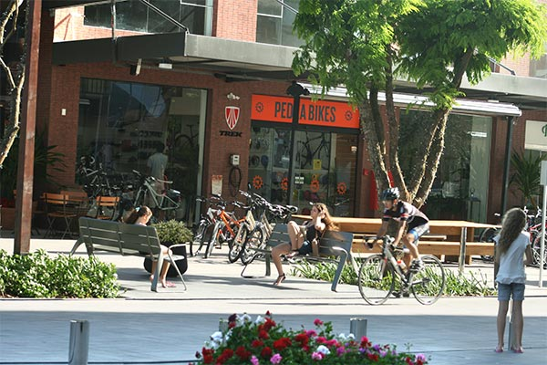

Passear na Avenida Beira Mar

A Avenida Jornalista Rubens de Arruda Ramos, mais conhecida como Avenida Beira-Mar Norte, é uma avenida de Florianópolis. Localiza-se na região central da cidade, entre a parte inferior da Ponte Hercílio Luz e o viaduto de acesso ao Norte da Ilha.
Trata-se de uma avenida que corre junto ao mar, construída sobre um aterro na década de 1960. Na década de 1980 foi ampliada e tomou seu formato atual, com três faixas de rolamento e mais três faixas de pista local no sentido Centro-Trindade, e integrou com o aterro da Baía Sul feito na década de 1970, além de receber calçadão e ciclovia. Twitter
Ponte Hercílio Luz

A ponte Hercílio Luz está localizada em Florianópolis, no estado brasileiro de Santa Catarina. A ponte foi construída com o objetivo de ligar a parte insular da capital do estado, na ilha de Santa Catarina, à sua parte continental, visando substituir o antigo serviço de ligação por balsas.Twitter
Jurerê Internacional

Jurerê Internacional é um bairro nobre situado na região norte de Florianópolis, entre as praias de Canavieiras e do Forte. Localizado no Norte da Ilha de Santa Catarina, Jurerê Internacional é um empreendimento imobiliário, residencial e resort desenvolvido pelo Grupo Habitasul, ao lado da praia de Jurerê Tradicional.
Jurerê Internacional é, hoje, referência em urbanização orgânica e sustentabilidade para todo o País. Por trás desse sucesso, estão os princípios e diretrizes definidos pela Habitasul há mais de 30 anos, quando foi criado o residencial.Twitter
Pedra Branca

A história da Pedra Branca começa no final da década de 90, quando se planejou a transformação de uma fazenda familiar, com suas belezas naturais, em um bairro diferenciado no município de Palhoça, na Grande Florianópolis.
Desde o seu início o bairro teve como grande âncora a Universidade do Sul de Santa Catarina – Unisul, que aqui se instalou, trazendo vida e movimento ao empreendimento. O loteamento foi registrado como um bairro chamado Cidade Universitária Pedra Branca.Twitter